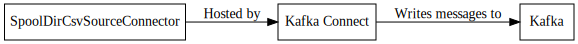

SpoolDirCsvSourceConnector¶
The SpoolDirCsvSourceConnector will monitor the directory specified in input.path for files and read them as a CSV converting each of the records to the strongly typed equivalent specified in key.schema and value.schema.
Configuration¶
| Name | Type | Importance | Default Value | Validator | Documentation |
|---|---|---|---|---|---|
| error.path | String | High | com.github.jcustenborder.kafka.connect.utils.config.validators.filesystem.ValidDirectoryWritable@4b05a9b1 | The directory to place files in which have error(s). This directory must exist and be writable by the user running Kafka Connect. | |
| finished.path | String | High | com.github.jcustenborder.kafka.connect.utils.config.validators.filesystem.ValidDirectoryWritable@296b758 | The directory to place files that have been successfully processed. This directory must exist and be writable by the user running Kafka Connect. | |
| input.file.pattern | String | High | Regular expression to check input file names against. This expression must match the entire filename. The equivalent of Matcher.matches(). | ||
| input.path | String | High | com.github.jcustenborder.kafka.connect.utils.config.validators.filesystem.ValidDirectoryWritable@7f129873 | The directory to read files that will be processed. This directory must exist and be writable by the user running Kafka Connect. | |
| topic | String | High | The Kafka topic to write the data to. | ||
| halt.on.error | Boolean | High | true | Should the task halt when it encounters an error or continue to the next file. | |
| key.schema | String | High | The schema for the key written to Kafka. | ||
| value.schema | String | High | The schema for the value written to Kafka. | ||
| csv.first.row.as.header | Boolean | Medium | false | Flag to indicate if the fist row of data contains the header of the file. If true the position of the columns will be determined by the first row to the CSV. The column position will be inferred from the position of the schema supplied in value.schema. If set to true the number of columns must be greater than or equal to the number of fields in the schema. | |
| schema.generation.enabled | Boolean | Medium | false | Flag to determine if schemas should be dynamically generated. If set to true, key.schema and value.schema can be omitted, but schema.generation.key.name and schema.generation.value.name must be set. | |
| schema.generation.key.fields | List | Medium | [] | The field(s) to use to build a key schema. This is only used during schema generation. | |
| schema.generation.key.name | String | Medium | com.github.jcustenborder.kafka.connect.model.Key | The name of the generated key schema. | |
| schema.generation.value.name | String | Medium | com.github.jcustenborder.kafka.connect.model.Value | The name of the generated value schema. | |
| timestamp.field | String | Medium | The field in the value schema that will contain the parsed timestamp for the record. This field cannot be marked as optional and must be a [Timestamp](https://kafka.apache.org/0102/javadoc/org/apache/kafka/connect/data/Schema.html) | ||
| timestamp.mode | String | Medium | PROCESS_TIME | ValidEnum{enum=TimestampMode, allowed=[FIELD, FILE_TIME, PROCESS_TIME]} | Determines how the connector will set the timestamp for the [ConnectRecord](https://kafka.apache.org/0102/javadoc/org/apache/kafka/connect/connector/ConnectRecord.html#timestamp()). If set to Field then the timestamp will be read from a field in the value. This field cannot be optional and must be a [Timestamp](https://kafka.apache.org/0102/javadoc/org/apache/kafka/connect/data/Schema.html). Specify the field in timestamp.field. If set to FILE_TIME then the last modified time of the file will be used. If set to PROCESS_TIME the time the record is read will be used. |
| batch.size | Int | Low | 1000 | The number of records that should be returned with each batch. | |
| csv.case.sensitive.field.names | Boolean | Low | false | Flag to determine if the field names in the header row should be treated as case sensitive. | |
| csv.escape.char | Int | Low | 92 | Escape character. | |
| csv.file.charset | String | Low | UTF-8 | Big5,Big5-HKSCS,CESU-8,EUC-JP,EUC-KR,GB18030,GB2312,GBK,IBM-Thai,IBM00858,IBM01140,IBM01141,IBM01142,IBM01143,IBM01144,IBM01145,IBM01146,IBM01147,IBM01148,IBM01149,IBM037,IBM1026,IBM1047,IBM273,IBM277,IBM278,IBM280,IBM284,IBM285,IBM290,IBM297,IBM420,IBM424,IBM437,IBM500,IBM775,IBM850,IBM852,IBM855,IBM857,IBM860,IBM861,IBM862,IBM863,IBM864,IBM865,IBM866,IBM868,IBM869,IBM870,IBM871,IBM918,ISO-2022-CN,ISO-2022-JP,ISO-2022-JP-2,ISO-2022-KR,ISO-8859-1,ISO-8859-13,ISO-8859-15,ISO-8859-2,ISO-8859-3,ISO-8859-4,ISO-8859-5,ISO-8859-6,ISO-8859-7,ISO-8859-8,ISO-8859-9,JIS_X0201,JIS_X0212-1990,KOI8-R,KOI8-U,Shift_JIS,TIS-620,US-ASCII,UTF-16,UTF-16BE,UTF-16LE,UTF-32,UTF-32BE,UTF-32LE,UTF-8,windows-1250,windows-1251,windows-1252,windows-1253,windows-1254,windows-1255,windows-1256,windows-1257,windows-1258,windows-31j,x-Big5-HKSCS-2001,x-Big5-Solaris,x-COMPOUND_TEXT,x-euc-jp-linux,x-EUC-TW,x-eucJP-Open,x-IBM1006,x-IBM1025,x-IBM1046,x-IBM1097,x-IBM1098,x-IBM1112,x-IBM1122,x-IBM1123,x-IBM1124,x-IBM1166,x-IBM1364,x-IBM1381,x-IBM1383,x-IBM300,x-IBM33722,x-IBM737,x-IBM833,x-IBM834,x-IBM856,x-IBM874,x-IBM875,x-IBM921,x-IBM922,x-IBM930,x-IBM933,x-IBM935,x-IBM937,x-IBM939,x-IBM942,x-IBM942C,x-IBM943,x-IBM943C,x-IBM948,x-IBM949,x-IBM949C,x-IBM950,x-IBM964,x-IBM970,x-ISCII91,x-ISO-2022-CN-CNS,x-ISO-2022-CN-GB,x-iso-8859-11,x-JIS0208,x-JISAutoDetect,x-Johab,x-MacArabic,x-MacCentralEurope,x-MacCroatian,x-MacCyrillic,x-MacDingbat,x-MacGreek,x-MacHebrew,x-MacIceland,x-MacRoman,x-MacRomania,x-MacSymbol,x-MacThai,x-MacTurkish,x-MacUkraine,x-MS932_0213,x-MS950-HKSCS,x-MS950-HKSCS-XP,x-mswin-936,x-PCK,x-SJIS_0213,x-UTF-16LE-BOM,X-UTF-32BE-BOM,X-UTF-32LE-BOM,x-windows-50220,x-windows-50221,x-windows-874,x-windows-949,x-windows-950,x-windows-iso2022jp | Character set to read wth file with. |
| csv.ignore.leading.whitespace | Boolean | Low | true | Sets the ignore leading whitespace setting - if true, white space in front of a quote in a field is ignored. | |
| csv.ignore.quotations | Boolean | Low | false | Sets the ignore quotations mode - if true, quotations are ignored. | |
| csv.keep.carriage.return | Boolean | Low | false | Flag to determine if the carriage return at the end of the line should be maintained. | |
| csv.null.field.indicator | String | Low | NEITHER | ValidEnum{enum=CSVReaderNullFieldIndicator, allowed=[EMPTY_SEPARATORS, EMPTY_QUOTES, BOTH, NEITHER]} | Indicator to determine how the CSV Reader can determine if a field is null. Valid values are EMPTY_SEPARATORS, EMPTY_QUOTES, BOTH, NEITHER. For more information see http://opencsv.sourceforge.net/apidocs/com/opencsv/enums/CSVReaderNullFieldIndicator.html. |
| csv.quote.char | Int | Low | 34 | The character that is used to quote a field. This typically happens when the csv.separator.char character is within the data. | |
| csv.separator.char | Int | Low | 44 | The character that seperates each field. Typically in a CSV this is a , character. A TSV would use t. | |
| csv.skip.lines | Int | Low | 0 | Number of lines to skip in the beginning of the file. | |
| csv.strict.quotes | Boolean | Low | false | Sets the strict quotes setting - if true, characters outside the quotes are ignored. | |
| csv.verify.reader | Boolean | Low | true | Flag to determine if the reader should be verified. | |
| empty.poll.wait.ms | Long | Low | 1000 | [1,…,9223372036854775807] | The amount of time to wait if a poll returns an empty list of records. |
| file.minimum.age.ms | Long | Low | 0 | [0,…,9223372036854775807] | The amount of time in milliseconds after the file was last written to before the file can be processed. |
| parser.timestamp.date.formats | List | Low | [yyyy-MM-dd’T’HH:mm:ss, yyyy-MM-dd’ ‘HH:mm:ss] | The date formats that are expected in the file. This is a list of strings that will be used to parse the date fields in order. The most accurate date format should be the first in the list. Take a look at the Java documentation for more info. https://docs.oracle.com/javase/6/docs/api/java/text/SimpleDateFormat.html | |
| parser.timestamp.timezone | String | Low | UTC | The timezone that all of the dates will be parsed with. | |
| processing.file.extension | String | Low | .PROCESSING | ValidPattern{pattern=^.*..+$} | Before a file is processed, it is renamed to indicate that it is currently being processed. This setting is appended to the end of the file. |
Property based example¶
This configuration is used typically along with standalone mode.
name=connector1
tasks.max=1
connector.class=com.github.jcustenborder.kafka.connect.spooldir.SpoolDirCsvSourceConnector
# The following values must be configured.
error.path=
finished.path=
input.file.pattern=
input.path=
topic=
Rest based example¶
This configuration is used typically along with distributed mode. Write the following json to connector.json, configure all of the required values, and use the command below to post the configuration to one the distributed connect worker(s).
{
"name": "connector1",
"config": {
"connector.class": "com.github.jcustenborder.kafka.connect.spooldir.SpoolDirCsvSourceConnector",
"error.path":"",
"finished.path":"",
"input.file.pattern":"",
"input.path":"",
"topic":"",
}
}
Use curl to post the configuration to one of the Kafka Connect Workers. Change http://localhost:8083/ the the endpoint of one of your Kafka Connect worker(s).
curl -s -X POST -H 'Content-Type: application/json' --data @connector.json http://localhost:8083/connectors